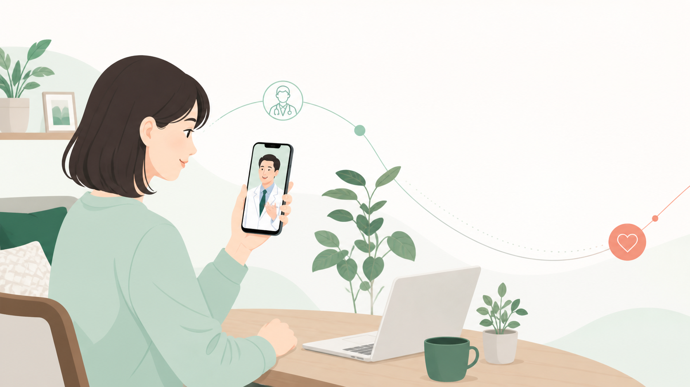

ナレーションの要点
- 診察料は0円。
- お薬代が4,201円以上の場合は送料無料。
- 定期購入の契約はありません。
- 医師の診察で処方が決まった場合に、必要なタイミングで必要な分だけご注文いただけます。
ONN-CLINIC / VIDEO DRAFT
150秒版の動画構成をブラウザで確認するためのドラフトです。字幕・シーン・秒数を確認してから、ナレーションとBGMを加えて動画ファイルへ仕上げます。

0:00 - 0:15
通院せず、スマホで医師に相談。
このページは動画制作確認用の非公開ドラフトです。実際の公開動画では、ナレーション、BGM、字幕の最終確認に加えて、医療機関・薬剤師による表現確認を行ってください。